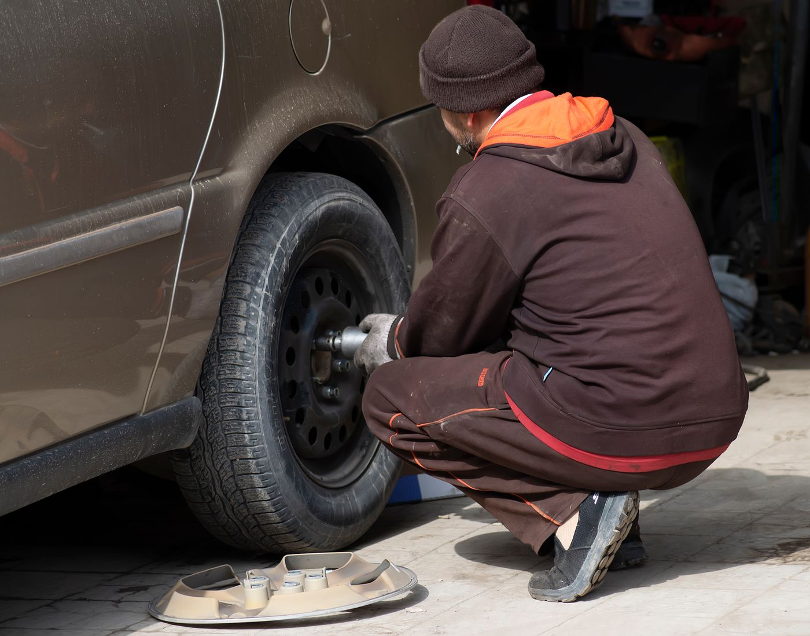

Шиномонтаж легковой
Колёса легковых автомобилей от 12 до 22 дюймов.
уточняетсязависит от радиуса
Выберите услугу, радиус колёс и удобное время — заявка соберётся сама и придёт мастеру в Telegram. Он перезвонит и подтвердит визит.

Это концепт. С вашими фото и правками будет ещё лучше
Список и цены «от» — с текущего сайта. Где цены нет, честно пишем «уточняется».
Колёса легковых автомобилей от 12 до 22 дюймов.
Правка литых дисков в Барнауле — отдельная услуга на сайте.
Ремонт боковых порезов шин.
Восстановление стоек и амортизаторов.
Автоэлектрик, ремонт электрооборудования, компьютерная диагностика.
Сигнализации с автозапуском, аксессуары, GPS/GSM/CAN-модули.
Структура, которую сервису останется заполнить: радиус → цена шиномонтажа и правки.
| Радиус | Шиномонтаж, комплект 4 колеса | Правка литого диска, за 1 шт. |
|---|---|---|
| R12–R14 | уточняется | уточняется |
| R15 | уточняется | уточняется |
| R16 | уточняется | уточняется |
| R17 | уточняется | уточняется |
| R18 | уточняется | уточняется |
| R19–R20 | уточняется | уточняется |
| R21–R22 | уточняется | уточняется |
Цен по радиусу на текущем сайте нет — сервис заполнит таблицу, и клиент увидит стоимость ещё до звонка.
Четыре коротких шага — и заявка у мастера в Telegram. Попробуйте: это рабочий макет.
Цены «от» — с текущего сайта; остальное уточняется.
Радиус подскажет мастеру, какое оборудование подготовить.
Желаемое время — мастер перезвонит и подтвердит. Часы по странице контактов: 10:00–21:00 без выходных (актуальность уточняется).
Так это будет работать: мастер получает заявку с услугой, радиусом и временем и перезванивает, чтобы подтвердить визит. Сейчас это макет — ничего не отправлено и не сохранено.
Отзывы с текущего сайта — с датами, без правок.
«Правил 4 литых диска, сразу переобулся на лето. Понравилось дешево, качественно, быстро. Спасибо парни.»Владимир · 12 марта 2016
«Максим правил 4 литых диска, отлично. по цене 1900 за все.»Кирилл (Mitsubishi Lancer 9) · 4 апреля 2014
«Правил 2 диска, реально ребята чудеса творят! Диски новые такими не были, денег взяли 1300р за оба диска. Рекомендую.»Сергей, Mazda 6 · 28 июля 2013
Цитаты — с главной страницы текущего сайта, 2013–2016 годы; цены в них не актуальны. Свежие отзывы с карт можно подключить после согласования.
Только то, что опубликовано на сайте сервиса.
Нет. Вы выбираете желаемое время, мастер перезванивает и подтверждает визит.
По сайту — шиномонтаж колёс легковых автомобилей от 12 до 22 дюймов.
Цены по радиусу на текущем сайте не опубликованы — уточняется. Цены «от» для других работ указаны в карточках услуг.
На странице контактов: с 10:00 до 21:00 без выходных. Актуальность графика уточняется.
Барнаул, ул. Энтузиастов, 20а. Часы по сайту: 10:00–21:00 без выходных — уточняется.